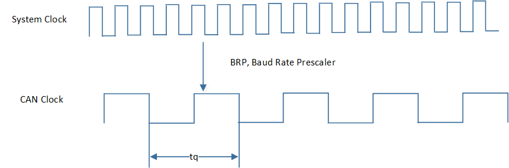
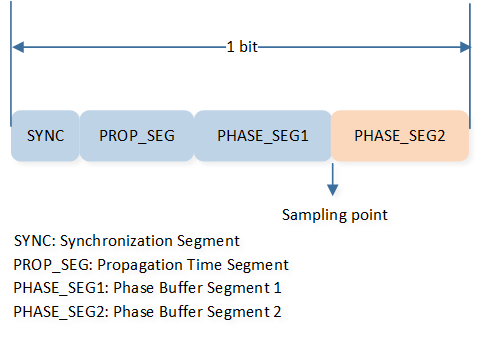
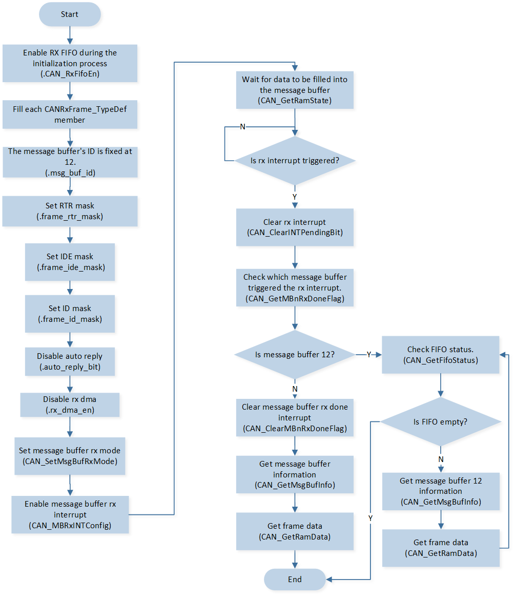
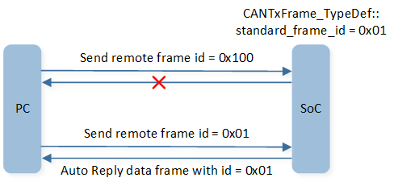
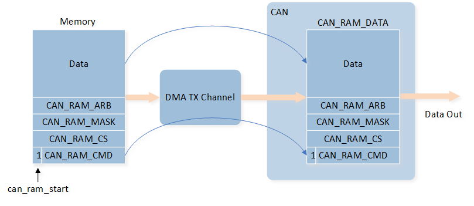
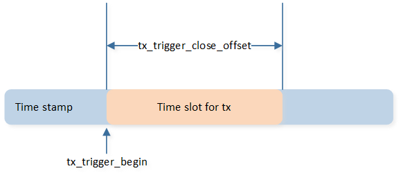

CAN
Sample List
This chapter introduces the details of the CAN sample. The RTL87x2G provides the following samples for the CAN peripheral.
Functional Overview
The CAN module is targeted for CAN bus communication according to the ISO11898-1-2015 standard and CAN 2.0 A/B. The module also has a part of memory logic for flexible transmission and reception of CAN messages. The logic eases the loading of the CPU and increases efficiency.
Feature List
Full implementation of CAN 2.0 A/B.
Time stamp support.
Message RAM to store RX/TX packet for easing the loading of CPU.
Loop back mode and silence mode support.
Part of Message RAM configured as FIFO.
GDMA function for TX and RX.
Auto reply for remote message.
Auto re-transmission.
Warning function when error counter is larger than the threshold (default 96).
Timer-triggered message in TX.
Support Frame Type
We support Standard Data Frame, Extended Data Frame, Standard Remote Frame, and Extended Remote Frame. These frames are CAN frames from ISO11898, and detailed explanations can be found in the ISO standards.
Bit Timing
The CAN clock is derived by dividing the system clock, and one cycle is referred to as tq, representing the smallest time unit for the operation of the CAN controller.

CAN Clock
During initialization, the CAN clock can be determined by BRP, which is defined in CAN_BIT_TIMING_TYPE_TypeDef::can_brp.
The effective BRP is the set value plus 1.
CAN does not have a clock line, so it uses bit synchronization to ensure the timing of communication and to correctly sample the bus levels.The bit synchronization of CAN is achieved through hard synchronization and resynchronization.
Hard Synchronization: Hard synchronization occurs at the start of the data frame (Start of Frame, SOF), where the CAN controller adjusts its internal clock to synchronize with the bus.
Resynchronization: Resynchronization is used to fine-tune the clock during data frame transmission to ensure continuous clock synchronization. If a node detects a phase error between the actual edge and the expected edge, the resynchronization process will correct this deviation through a set phase compensation mechanism. The maximum allowable compensation value can be set via the synchronization jump width
CAN_BIT_TIMING_TYPE_TypeDef::can_sjw, measured in tq.
To achieve bit synchronization through a hard synchronization method, the CAN protocol defines the concept of bit timing. Bit timing refers to the configuration of bit time and the sampling point. Bit time represents the duration of one data bit (1-bit) and is composed of four segments: the synchronization segment (SYNC), the propagation time segment (PROP_SEG), phase segment 1 (PHASE_SEG1), and phase segment 2 (PHASE_SEG2). The CAN bit timing is as follows:

CAN Bit Timing
SYNC: Synchronization segment, the initial part of the bit time used for node synchronization, with a fixed length of 1 tq.
PROP_SEG: Propagation time segment, used to compensate for physical delays in the network. The unit is tq.
PHASE_SEG1: Used for compensation when adjusting timing. The unit is tq.
Sample Point: The specific moment when the CAN controller samples the data bit, located at the end of PHASE_SEG1.
PHASE_SEG2: A segment used for further timing compensation adjustment after the sample point. The unit is tq.
\(TSEG1 = PROP\_SEG + PHASE\_SEG1\), can be set via
CAN_BIT_TIMING_TYPE_TypeDef::can_tseg1, with the actual effective value being the set value plus 1.\(TSEG2 = PHASE\_SEG2\), can be set via
CAN_BIT_TIMING_TYPE_TypeDef::can_tseg2, with the actual effective value being the set value plus 1.
Note
\(CAN Speed = 40000000 / ((BRP + 1)*(1 + TSEG1 + 1 + TSEG2 + 1))\).
The setting ranges for BRP, TSEG1, SJW, and TSEG2 in Standard CAN are as follows:
Parameter |
Min |
Max |
|---|---|---|
BRP |
0 |
31 |
TSEG1 |
1 |
15 |
TSEG2 |
1 |
7 |
SJW |
1 |
4 |
Message Buffer
The CAN peripheral supports 16 Message Buffers for data transmission and reception. When sending or receiving data, a specific Message Buffer ID must be designated for the task.
The TX Message Buffer ID is configured through CANTxFrame_TypeDef::msg_buf_id, and the RX Message Buffer ID is configured through CANRxFrame_TypeDef::msg_buf_id.
The IDs for the Message Buffers range from 0 to 15, with each Message Buffer having a different priority. The priority of a Message Buffer is solely determined by its ID, not by the content of the message. For TX Message Buffers, a lower ID number indicates a higher priority, meaning the Message Buffer with ID 0 has the highest priority. Conversely, for RX Message Buffers, a higher ID number indicates a higher priority, meaning the Message Buffer with ID 15 has the highest priority.
When the RX FIFO feature is enabled, the four highest numbered Message Buffers will function as a FIFO. The RX FIFO uses the configuration of MB12 (Message Buffer ID 12) for data filtering and reading, and RX interrupts are also generated through the configuration of MB12. The FIFO has the highest reception priority.

CAN FIFO
CAN TX
Before sending frame data in CAN, you need to define a CANTxFrame_TypeDef type structure variable to configure the frame information. After configuration, call CAN_SetMsgBufTxMode() to write the frame information and data into the register and proceed with data transmission.
If the transmission interrupt is enabled, you can polling check the transmission status of each mailbox within the interrupt function, locate and clear the status flag of the corresponding mailbox.
The CAN TX process is illustrated as shown:

CAN TX Flow
Note
CAN supports sending a maximum of 8 bytes of data at a time.
CAN RX
Before receiving CAN frame data, a CANRxFrame_TypeDef type structure variable needs to be defined, configuring the receive mailbox ID and the filtering conditions for the frame information, among other settings. Call CAN_SetMsgBufRxMode() to write the configuration information into the register, and call CAN_MBRxINTConfig() to enable the RX receive interrupt.
Once the CAN data reception is complete, a receive interrupt will be triggered. Within the receive interrupt, poll to check the reception status of each mailbox, find and clear the reception status flag of the corresponding set mailbox. Call CAN_GetMsgBufInfo() to obtain the received frame information, and call CAN_GetRamData() to obtain the received data information.
The CAN RX process is illustrated as shown:

CAN RX Flow
If the CAN RX FIFO function is enabled, RX data is received through mailbox ID 12. Call CAN_GetFifoStatus() to check the FIFO status. If the FIFO is not empty, call CAN_GetMsgBufInfo() and CAN_GetRamData() to obtain frame information and data information.
The CAN RX process with the RX FIFO function enabled is shown in the diagram:

CAN RX Flow (Enable RX FIFO)
AutoReply
When the automatic reply function of CAN is enabled, CAN can automatically reply upon receiving a remote frame or automatically receive after completing the transmission of a remote frame.
RX Remote Frame Auto TX Data Frame
When the Message Buffer receives a remote frame sent by the peer, CAN can automatically reply with a data frame. At this time, you need to set CANTxFrame_TypeDef::auto_reply_bit to 1 and store the prepared frame information in the Message Buffer.
When the remote frame ID sent by the peer matches the Frame ID CANTxFrame_TypeDef::standard_frame_id in the TX Buffer, the SoC will automatically reply with the corresponding data frame. If the remote frame ID information does not match, the SoC will not reply with a data frame.

CAN RX Remote Auto TX Data Frame
TX Remote Frame Auto RX Data Frame
The SoC sends remote frame data to the counterpart, and CAN can automatically receive the data frame replied by the counterpart. At this time, it is necessary to set CANRxFrame_TypeDef::auto_reply_bit to 1, so the SoC will receive this data frame and store it in the corresponding Message Buffer.
When the ID of the data frame replied by the counterpart matches the Frame ID set in RX CANRxFrame_TypeDef::standard_frame_id, the SoC will receive this data frame. If the data frame ID information does not match, the SoC will not receive this frame data.

CAN TX Remote Auto RX Data Frame
CAN GDMA
CAN supports GDMA TX/RX transmission. CAN only supports 32-bit aligned transmission, so during GDMA initialization, it is necessary to set GDMA_InitTypeDef::GDMA_SourceDataSize and GDMA_InitTypeDef::GDMA_DestinationDataSize to GDMA_DataSize_Word.
CAN GDMA TX
When performing GDMA TX, it is necessary to set the transfer direction to memory to memory mode.
GDMA does not need to perform hardware handshaking with CAN. The source address is the RAM space where data is stored.
You need to define a variable of type CAN_RAM_TypeDef structure to fill in the frame information and data information as the source address for GDMA transfer.
The destination address is the RAM Data address CAN->CAN_RAM_DATA in the CAN peripheral.

CAN GDMA TX Diagram
CAN GDMA RX
During GDMA RX, the transfer direction is from peripheral to memory.
When the CAN receives a complete frame of information, GDMA will transfer the data from CAN->CAN_RX_DMA_DATA to the user-specified RAM space.
In the destination RAM space, a CANRxDmaData_TypeDef type structure variable needs to be defined to receive the information transferred by the GDMA.

CAN GDMA RX Diagram
TX Trigger & Time Stamp
In normal mode, the TX CAN frame information written into the Message Buffer will be sent when the bus is idle.
When the TX Trigger function is enabled, the TX CAN frame information written into the Message Buffer will be sent during the time period between tx_trigger_begin and tx_trigger_begin + tx_trigger_close_offset, and only when the bus is idle.
The timestamp function also needs to be enabled simultaneously when the TX Trigger function is activated.
Enable the timestamp function by configuring CAN_TIME_STAMP_TYPE_TypeDef::can_time_stamp_en during initialization, set the timestamp division using CAN_TIME_STAMP_TYPE_TypeDef::can_time_stamp_div, and obtain the current timestamp through CAN_GetTimeStampCount().
Configure the values of tx_trigger_begin and tx_trigger_close_offset using CAN_TxTriggerConfig().

CAN TX Trigger & Time Stamp